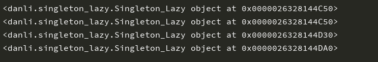
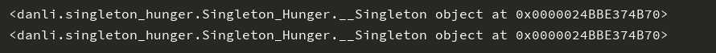

单例模式是一种软件的设计模式，此模式下单例对象的类只能存在一个实例。当项目某些部分不会影响代码的执行时，例如日志记录器，使用单例模式设计是较好的一种方法。除此之外可以使用单例模式获得全局状态的有缓存、负载均衡、路由映射。
需要调用相关方法才能创建单例，资源利用高，多线程访问时增大开销。
singleton_lazy.py
class Singleton_Lazy():
__instance = None
def __init__(self):
pass
@staticmethod
def create_instance():
if not Singleton_Lazy.__instance:
Singleton_Lazy.__instance = Singleton_Lazy()
return Singleton_Lazy.__instancetest_lazy.py
from danli.singleton_lazy import Singleton_Lazy
dan1 = Singleton_Lazy().create_instance()
dan2 = Singleton_Lazy().create_instance()
print(dan1)
print(dan2)
dan3 =Singleton_Lazy()
dan4 =Singleton_Lazy()
print(dan3)
print(dan4)
调用create_instance()方法创建单例，因为单例的特性，所以单例1和2的内存地址相同。实例3和4未调用创建单例的静态方法，因此生成的是两个不同的实例。内存地址为D30和DA0。
在初始化类时就自动创建单例，能保证线程安全，节省运行时间，会降低资源利用率。
singleton_hunger.py
class Singleton_Hunger():
instance = None
class __Singleton():
pass
def __new__(cls, *args, **kwargs):
if not Singleton_Hunger.instance:
cls.instance = Singleton_Hunger.__Singleton()
return cls.instancetest_hunger.py
from singleton_hunger import Singleton_Hunger
dan1 = Singleton_Hunger()
dan2 = Singleton_Hunger()
print(dan1)
print(dan2)
饿单例在类初始化时自动创建好单例
1.只存在唯一的单例对象
2.减少内存的占用，增加资源利用率
1.由于单例模式时全局共享的，所以单例对象的状态维护需要特别小心。
2.单例对象一般职责过重，在一定程度上违背了“单一职责原则”。
全局状态是我们在编程中需要警惕的一个地方，项目中的某些代码可能会影响该全局状态，从而造成不必要的麻烦。在实际的开发中，我们需要尽量避免单例模式的滥用。
应用单例模式设计日志记录器—>单击此处